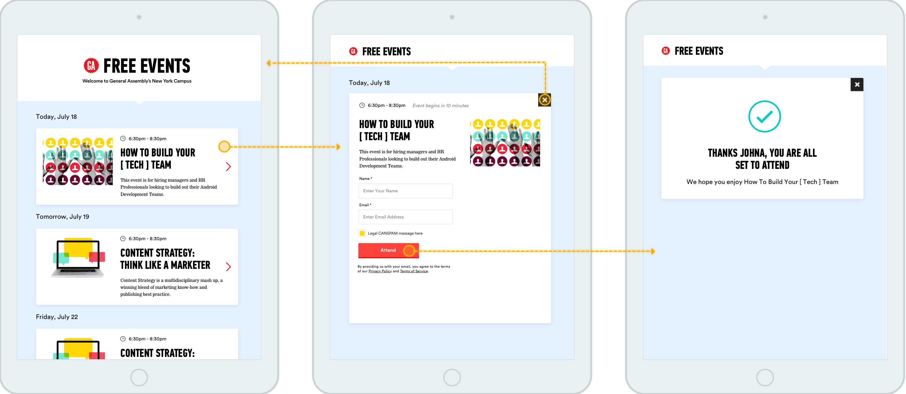

This application lives at the front desk of General Assembly’s 18 locations and provides a quick list view of the available free events. Students and other persons hanging around campus can browse and sign up for relevant events. This application helped to alleviate a lot of time our front desk staff was spending fielding questions about happenings on campus. It also serves as a nice physical artifact to interact with in our campus locations.
This list view is intentionally simple and pulls only geo-specific free events based on the iPads location.

The application was designed & developed within a two week sprint cycle. The success screen is set on a timer and returns to the main screen. This flow mimics other patterns established by card reader applications. I focused keenly on the visual design elements for the iPad screen. Often as a designer, the starting point is one of the extremes: mobile-first or standard 980px+. So starting in the middle was a fun change of pace for me personally.